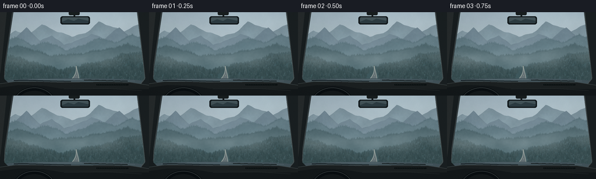
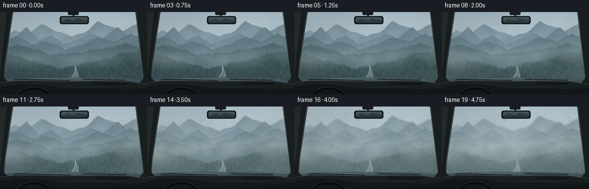

CODING AGENTS AS PIXEL WORLD MODELS
traex/GPT-6.1-Sol · phygen_114
点击播放 · 原生 RGB 像素
逐轮保存的候选
回放视频、检查图与代码变化。
每份候选均可单独播放。实际图片检查记录在下方工具轨迹中。
候选 01播放与检查图
点击播放 · 原生 RGB 像素


展开代码变化
--- 上一保存版本
+++ 本次保存版本
@@ -0,0 +1,209 @@
+from pathlib import Path
+import numpy as np
+from PIL import Image, ImageDraw, ImageFilter
+import artifact_io
+
+# A stationary camera in a parked car, looking into a cold mountain valley.
+W,H=768,432
+rng=np.random.default_rng(114)
+yy,xx=np.mgrid[0:H,0:W].astype(float)
+
+def noise(w,h,grid,seed):
+ r=np.random.default_rng(seed)
+ a=(r.random((max(2,int(h/grid)),max(2,int(w/grid))))*255).astype('uint8')
+ return np.asarray(Image.fromarray(a).resize((w,h),Image.Resampling.BICUBIC),dtype=float)/255
+N=sum((noise(W,H,g,114+int(g))*a for g,a in [(140,.46),(60,.27),(23,.17),(6,.1)]))
+texture=noise(W,H,3,222)
+# Pale luminous overcast sky, gently darker overhead.
+col0=np.array([154,174,185]); col1=np.array([205,215,214])
+scene=col0[None,None,:]+(col1-col0)[None,None,:]*(yy/H*.92)[...,None]
+scene=scene+(N-.5)[...,None]*15
+sun=np.exp(-((xx-592)**2/(270**2)+(yy-32)**2/(120**2)))
+scene+=sun[...,None]*17
+
+# Layered steep Alpine ridgelines, irregular in both silhouette and rock strata.
+profiles=[]
+x=np.arange(W)
+anchors=[
+([0,80,150,215,292,370,440,508,582,640,715,768],[138,94,119,61,96,128,109,46,80,99,57,92]),
+([0,65,136,207,267,330,399,471,540,615,690,768],[171,141,83,145,117,172,146,109,139,76,142,115]),
+([0,82,164,244,338,428,512,590,681,768],[167,132,173,157,202,170,139,161,117,159]),
+([0,91,190,269,365,440,540,660,768],[209,177,203,235,220,215,198,168,212]),
+([0,110,210,307,401,518,637,768],[224,245,279,304,287,264,224,216])]
+colors=[(121,143,154),(104,126,139),(85,111,121),(65,91,98),(46, seventy:=72,77)]
+for i,(ax,ay) in enumerate(anchors):
+ base=np.interp(x,ax,ay)
+ base+=np.sin(x*.071+i)*2.0+np.sin(x*.153+2*i)*.85+np.sin(x*.029+i)*3
+ profiles.append(base)
+ mask=yy>=base[None,:]
+ level=np.clip((yy-base[None,:])/100,0,1)
+ rock=noise(W,H,40,44+i)*.65+noise(W,H,8,71+i)*.35
+ shade=(rock-.5)*12+np.sin(xx*.027+yy*.052+i)*3
+ c=np.array(colors[i])[None,None,:]+shade[...,None]+level[...,None]*np.array([4,7,7])
+ scene=np.where(mask[...,None],c,scene)
+ # Forest silhouette on the near ridges.
+ if i>=2:
+ im=Image.fromarray(np.uint8(np.clip(scene,0,255)))
+ d=ImageDraw.Draw(im)
+ for tx in range(0,W,3 if i==4 else 4):
+ py=base[tx]+1
+ ht=float(rng.uniform(4,11)*(1+(i-2)*.3))
+ width=ht*.24
+ color=tuple(np.clip(np.array(colors[i])-rng.uniform(0,8),0,255).astype(int))
+ d.polygon([(tx,py-ht),(tx-width,py),(tx+width,py)],fill=color)
+ d.line([(tx,py),(tx,py+3)],fill=color,width=1)
+ scene=np.asarray(im,dtype=float)
+
+# Dense trees fill the lower mountainsides, with haze separating receding ridges.
+im=Image.fromarray(np.uint8(np.clip(scene,0,255)));d=ImageDraw.Draw(im)
+for i in range(5000):
+ tx=float(rng.uniform(-8,W+8)); py=float(rng.uniform(215,410)); ix=int(np.clip(tx,0,W-1))
+ if py<profiles[4][ix]+5: continue
+ if abs(tx-(394-.18*(py-285))) < (py-269)*.29+10: continue
+ ht=float(rng.uniform(5,15)*(1+(py-240)/180))
+ v=rng.uniform(-7,7)+(py-220)*-.013
+ c=tuple(np.clip(np.array([39,62,65])+v,0,255).astype(int))
+ for seg in range(3):
+ top=py-ht+ht*.22*seg; half=ht*(.15+.06*seg)
+ d.polygon([(tx,top),(tx-half,top+ht*.55),(tx+half,top+ht*.55)],fill=c)
+ d.line((tx,py-ht,tx,py),fill=c,width=1)
+scene=np.asarray(im,dtype=float)
+# Narrow winding empty mountain road outside the windshield.
+road=Image.new('RGBA',(W,H));d=ImageDraw.Draw(road)
+roadpoints=[]
+for y in range(278,H+20):
+ z=(y-278)/(H-278)
+ center=392-58*z+22*np.sin(z*3.8)
+ half=2+z*z*91
+ roadpoints.append((center-half,y,center+half))
+poly=[(l,y) for l,y,r in roadpoints]+[(r,y) for l,y,r in reversed(roadpoints)]
+d.polygon(poly,fill=(88,101,105,255))
+d.line([(l+1,y) for l,y,r in roadpoints],fill=(165,171,162,210),width=3)
+d.line([(r-1,y) for l,y,r in roadpoints],fill=(165,171,162,210),width=3)
+for a in [0.3,.43,.60,.82]:
+ coords=[]
+ for z in np.linspace(a,a+.045+ .015*a,10):
+ y=278+z*(H-278);center=392-58*z+22*np.sin(z*3.8);coords.append((center,y))
+ d.line(coords,fill=(192,184,143,220),width=max(1,int(a*3)))
+scene=np.asarray(Image.alpha_composite(Image.fromarray(np.uint8(scene)).convert('RGBA'),road).convert('RGB'),dtype=float)
+
+# Slow, continuously translated banks of fog, not independent random frames.
+large=noise(W*2,H,100,909); fine=noise(W*2,H,34,818)
+# Exact windshield silhouette. Condensation stays on glass, not car trim.
+glassim=Image.new('L',(W,H),0);dg=ImageDraw.Draw(glassim)
+dg.polygon([(66,0),(706,0),(750,371),(20,371)],fill=255)
+glass=np.asarray(glassim,dtype=float)/255
+# Fixed nucleation sites on the cold windshield; they grow with elapsed time.
+drops=[]
+for k in range(2650):
+ px=float(rng.uniform(45,728)); py=float(rng.uniform(11,369))
+ edge=(abs(px-384)/345)**1.6+(abs(py-175)/195)**2*.35
+ onset=float(rng.uniform(.04,.84)-edge*.19)
+ size=float(rng.uniform(.40,1.55))
+ if k<170: size=float(rng.uniform(1.7,4.7));onset=float(rng.uniform(.15,.67))
+ drops.append((px,py,onset,size,k))
+# Condensation film has nonuniform boundaries, developing first at edges.
+filmnoise=noise(W,H,62,700)*.6+noise(W,H,23,702)*.4
+edgefield=np.clip((abs(xx-384)/370)**1.4+(abs(yy-170)/230)**2*.5,0,1.5)
+
+# Detailed fixed interior, kept in sharp focus in front of the glass.
+interior=Image.new('RGBA',(W,H));d=ImageDraw.Draw(interior)
+# Hood beyond dash, visible as a narrow cool blue-gray sliver.
+d.polygon([(37,350),(139,344),(375,342),(630,345),(738,354),(750,375),(18,375)],fill=(66,83,90,255))
+d.line([(65,353),(195,348),(421,348),(694,356)],fill=(116,134,142,210),width=2)
+# Resting wiper blades just above cowl.
+d.line([(365,359),(113,352),(71,354)],fill=(20,29,33,255),width=5)
+d.line([(657,357),(433,351)],fill=(22,30,32,255),width=5)
+d.line([(364,361),(267,357)],fill=(48,57,60,255),width=2)
+# A pillars have subtle broad fabric highlights, not flat outlines.
+d.polygon([(0,0),(68,0),(27,273),(21,345),(54,377),(0,409)],fill=(24,30,32,255))
+d.polygon([(0,0),(34,0),(4,290),(0,317)],fill=(38,43,44,255))
+d.line([(64,0),(25,271),(22,338)],fill=(69,78,80,255),width=3)
+d.polygon([(706,0),(768,0),(768,423),(718,379),(748,347)],fill=(26,32,34,255))
+d.line([(709,0),(747,340),(724,373)],fill=(73,82,83,255),width=3)
+# Dashboard soft curved crown.
+d.polygon([(0,370),(81,358),(194,358),(292,361),(410,361),(550,359),(672,362),(768,377),(768,432),(0,432)],fill=(27,32,33,255))
+d.line([(0,370),(81,359),(194,359),(292,362),(410,362),(550,360),(672,363),(768,378)],fill=(64, seventy2:= seventy+0,73,255),width=3)
+d.polygon([(0,390),(99,377),(228,381),(310,395),(768,398),(768,432),(0,432)],fill=(19,24,26,255))
+# Passenger defroster grille and dashboard seam.
+d.rounded_rectangle((496,372,662,379),radius=3,fill=(11,17,18,255))
+for tx in range(505,653,9):d.line((tx,373,tx-3,377),fill=(50,57,58,255),width=1)
+d.line([(330,397),(555,394),(728,405)],fill=(51,57,57,255),width=2)
+# Upper portion of steering wheel on left, cropped naturally.
+d.arc((59,386,294,591),180,360,fill=(9,14,17,255),width=21)
+d.arc((63,390,290,587),185,350,fill=(52,58,59,255),width=3)
+# Rear-view mirror fixed at the top, with muted cabin reflection.
+d.rounded_rectangle((354,-10,410,15),radius=7,fill=(24,30,31,255))
+d.line([(382,9),(384,26)],fill=(22,27,29,255),width=9)
+d.rounded_rectangle((311,21,463,63),radius=11,fill=(18,25,28,255))
+d.rounded_rectangle((319,27,456,56),radius=6,fill=(66,82,87,255))
+d.polygon([(320,49),(351,36),(381,45),(403,33),(456,44),(455,55),(320,55)],fill=(44,59,65,255))
+d.line([(322,28),(451,28)],fill=(101,115,119,255),width=1)
+
+frames=[]
+for fi in range(20):
+ t=fi/19
+ shift=int(t*160)
+ f=large[:,shift:shift+W]*.7+fine[:,shift:shift+W]*.3
+ fogband=np.exp(-((yy-(237-20*t+14*np.sin(xx/190+t*2))) / (41+22*t))**2)
+ lowfog=np.exp(-((yy-328)/85)**2)*.20
+ density=np.clip((.20+.32*t)*fogband*(.50+f)+lowfog*(.4+.3*t),0,.67)
+ # High valley clouds are separate from the changing foreground moisture.
+ mountainhaze=.045+.10*np.exp(-((yy-154)/70)**2)
+ density=1-(1-density)*(1-mountainhaze)
+ fogcol=np.array([181,196,200])
+ outside=scene*(1-density[...,None])+fogcol*density[...,None]
+ # A moving soft wispy front comes up to the windshield.
+ wisps=np.exp(-((yy-275+29*np.sin(xx/175+t*3.3))/(26+8*t))**2)
+ wispalpha=(.02+.065*t)*wisps*(f+.25)
+ outside=outside*(1-wispalpha[...,None])+np.array([196,209,211])*wispalpha[...,None]
+ sharp=Image.fromarray(np.uint8(np.clip(outside,0,255)))
+ blur=np.asarray(sharp.filter(ImageFilter.GaussianBlur(2.2+3.9*t)),dtype=float)
+ # Surface haze grows from edges and cold, irregular nucleation patches.
+ onset=.46-.33*edgefield+.18*(filmnoise-.5)
+ growth=np.clip((t-onset)/.55,0,1)
+ alpha=(.08+.52*growth)*growth*glass
+ out=outside*(1-alpha[...,None])+ (blur*.64+np.array([203,215,217])*.36)*alpha[...,None]
+ # Tiny dew drops optically distort and reflect the scene beneath the glass.
+ beadlayer=Image.new('RGBA',(W,H)); bd=ImageDraw.Draw(beadlayer)
+ for px,py,start,rr,k in drops:
+ age=np.clip((t-start)/(.65-start*.2),0,1)
+ if age<=0:continue
+ r=rr*(.26+.74*age)
+ # A few largest beads slowly coalesce and creep down under gravity.
+ cy=py+(max(0,t-.77)*19 if k<16 else 0)
+ ix=int(px);iy=int(cy)
+ if iy>=H or glass[iy,ix]<.5:continue
+ if r<1.05:
+ op=int(18+70*age)
+ bd.ellipse((px-r,cy-r,px+r,cy+r),fill=(193,212,218,op))
+ continue
+ ry=r*(1.03+.1*age)
+ x0=max(0,int(px-r-2));x1=min(W,int(px+r+3));y0=max(0,int(cy-ry-2));y1=min(H,int(cy+ry+3))
+ gy,gx=np.mgrid[y0:y1,x0:x1];nx=(gx-px)/r;ny=(gy-cy)/ry;rs=nx*nx+ny*ny
+ mask=rs<1
+ refx=np.clip((px+nx*r*.51).astype(int),0,W-1);refy=np.clip((cy-ny*r*.48+1).astype(int),0,H-1)
+ # A soft dark rim and a cool upper specular crescent.
+ refr=out[refy,refx]*.92+np.array([173,197,205])*.08
+ rim=np.clip((rs-.55)*1.5,0,.32)
+ refr*=1-rim[...,None]
+ patch=out[y0:y1,x0:x1]
+ patch[mask]=patch[mask]*.25+refr[mask]*.75
+ bd.arc((px-r,cy-ry,px+r,cy+ry),210,292,fill=(224,237,239,int(60+110*age)),width=1)
+ bd.arc((px-r,cy-ry,px+r,cy+ry),40,125,fill=(48, seventy3:=76,87,int(22+35*age)),width=1)
+ if r>2.3:bd.ellipse((px-r*.35,cy-ry*.51,px-r*.35+.8,cy-ry*.51+.8),fill=(241,248,248,150))
+ im=Image.alpha_composite(Image.fromarray(np.uint8(np.clip(out,0,255))).convert('RGBA'),beadlayer)
+ # Subtle interior reflection on the windshield remains stationary.
+ reflect=Image.new('RGBA',(W,H)); rd=ImageDraw.Draw(reflect)
+ rd.arc((84,254,739,605),194,334,fill=(153,174,178,8),width=3)
+ im=Image.alpha_composite(im,reflect)
+ im=Image.alpha_composite(im,interior).convert('RGB')
+ # Natural sensor texture and restrained cold morning color grade.
+ arr=np.asarray(im,dtype=float)
+ grain=np.random.default_rng(314).normal(0,.70,(H,W))
+ arr+=grain[...,None]
+ vignette=1-.085*((xx-W*.5)/(W*.7))**2-.045*((yy-H*.5)/(H*.8))**2
+ arr*=vignette[...,None]
+ im=Image.fromarray(np.uint8(np.clip(arr,0,255))).resize((256,144),Image.Resampling.LANCZOS)
+ frames.append(np.asarray(im))
+artifact_io.save(np.stack(frames),Path(__file__).parent)
可观测工具轨迹
实际执行的命令与返回图片。
命令 1exit 0
/bin/bash -lc 'ls -la && cat prompt.txt && cat GENERATION_RULES.md && cat task_spec.json'
命令 2exit 0
/bin/bash -lc 'cat artifact_io.py'
命令 3exit 0
/bin/bash -lc "cat > generate.py <<'PY'
from pathlib import Path
import numpy as np
from PIL import Image, ImageDraw, ImageFilter
import artifact_io
# A stationary camera in a parked car, looking into a cold mountain valley.
W,H=768,432
rng=np.random.default_rng(114)
yy,xx=np.mgrid[0:H,0:W].astype(float)
def noise(w,h,grid,seed):
r=np.random.default_rng(seed)
a=(r.random((max(2,int(h/grid)),max(2,int(w/grid))))*255).astype('uint8')
return np.asarray(Image.fromarray(a).resize((w,h),Image.Resampling.BICUBIC),dtype=float)/255
N=sum((noise(W,H,g,114+int(g))*a for g,a in [(140,.46),(60,.27),(23,.17),(6,.1)]))
texture=noise(W,H,3,222)
# Pale luminous overcast sky, gently darker overhead.
col0=np.array([154,174,185]); col1=np.array([205,215,214])
scene=col0[None,None,:]+(col1-col0)[None,None,:]*(yy/H*.92)[...,None]
scene=scene+(N-.5)[...,None]*15
sun=np.exp(-((xx-592)**2/(270**2)+(yy-32)**2/(120**2)))
scene+=sun[...,None]*17
# Layered steep Alpine ridgelines, irregular in both silhouette and rock strata.
profiles=[]
x=np.arange(W)
anchors=[
([0,80,150,215,292,370,440,508,582,640,715,768],[138,94,119,61,96,128,109,46,80,99,57,92]),
([0,65,136,207,267,330,399,471,540,615,690,768],[171,141,83,145,117,172,146,109,139,76,142,115]),
([0,82,164,244,338,428,512,590,681,768],[167,132,173,157,202,170,139,161,117,159]),
([0,91,190,269,365,440,540,660,768],[209,177,203,235,220,215,198,168,212]),
([0,110,210,307,401,518,637,768],[224,245,279,304,287,264,224,216])]
colors=[(121,143,154),(104,126,139),(85,111,121),(65,91,98),(46, seventy:=72,77)]
for i,(ax,ay) in enumerate(anchors):
base=np.interp(x,ax,ay)
base+=np.sin(x*.071+i)*2.0+np.sin(x*.153+2*i)*.85+np.sin(x*.029+i)*3
profiles.append(base)
mask=yy>=base[None,:]
level=np.clip((yy-base[None,:])/100,0,1)
rock=noise(W,H,40,44+i)*.65+noise(W,H,8,71+i)*.35
shade=(rock-.5)*12+np.sin(xx*.027+yy*.052+i)*3
c=np.array(colors[i])[None,None,:]+shade[...,None]+level[...,None]*np.array([4,7,7])
scene=np.where(mask[...,None],c,scene)
# Forest silhouette on the near ridges.
if i>=2:
im=Image.fromarray(np.uint8(np.clip(scene,0,255)))
d=ImageDraw.Draw(im)
for tx in range(0,W,3 if i==4 else 4):
py=base[tx]+1
ht=float(rng.uniform(4,11)*(1+(i-2)*.3))
width=ht*.24
color=tuple(np.clip(np.array(colors[i])-rng.uniform(0,8),0,255).astype(int))
d.polygon([(tx,py-ht),(tx-width,py),(tx+width,py)],fill=color)
d.line([(tx,py),(tx,py+3)],fill=color,width=1)
scene=np.asarray(im,dtype=float)
# Dense trees fill the lower mountainsides, with haze separating receding ridges.
im=Image.fromarray(np.uint8(np.clip(scene,0,255)));d=ImageDraw.Draw(im)
for i in range(5000):
tx=float(rng.uniform(-8,W+8)); py=float(rng.uniform(215,410)); ix=int(np.clip(tx,0,W-1))
if py<profiles[4][ix]+5: continue
if abs(tx-(394-.18*(py-285))) < (py-269)*.29+10: continue
ht=float(rng.uniform(5,15)*(1+(py-240)/180))
v=rng.uniform(-7,7)+(py-220)*-.013
c=tuple(np.clip(np.array([39,62,65])+v,0,255).astype(int))
for seg in range(3):
top=py-ht+ht*.22*seg; half=ht*(.15+.06*seg)
d.polygon([(tx,top),(tx-half,top+ht*.55),(tx+half,top+ht*.55)],fill=c)
d.line((tx,py-ht,tx,py),fill=c,width=1)
scene=np.asarray(im,dtype=float)
# Narrow winding empty mountain road outside the windshield.
road=Image.new('RGBA',(W,H));d=ImageDraw.Draw(road)
roadpoints=[]
for y in range(278,H+20):
z=(y-278)/(H-278)
center=392-58*z+22*np.sin(z*3.8)
half=2+z*z*91
roadpoints.append((center-half,y,center+half))
poly=[(l,y) for l,y,r in roadpoints]+[(r,y) for l,y,r in reversed(roadpoints)]
d.polygon(poly,fill=(88,101,105,255))
d.line([(l+1,y) for l,y,r in roadpoints],fill=(165,171,162,210),width=3)
d.line([(r-1,y) for l,y,r in roadpoints],fill=(165,171,162,210),width=3)
for a in [0.3,.43,.60,.82]:
coords=[]
for z in np.linspace(a,a+.045+ .015*a,10):
y=278+z*(H-278);center=392-58*z+22*np.sin(z*3.8);coords.append((center,y))
d.line(coords,fill=(192,184,143,220),width=max(1,int(a*3)))
scene=np.asarray(Image.alpha_composite(Image.fromarray(np.uint8(scene)).convert('RGBA'),road).convert('RGB'),dtype=float)
# Slow, continuously translated banks of fog, not independent random frames.
large=noise(W*2,H,100,909); fine=noise(W*2,H,34,818)
# Exact windshield silhouette. Condensation stays on glass, not car trim.
glassim=Image.new('L',(W,H),0);dg=ImageDraw.Draw(glassim)
dg.polygon([(66,0),(706,0),(750,371),(20,371)],fill=255)
glass=np.asarray(glassim,dtype=float)/255
# Fixed nucleation sites on the cold windshield; they grow with elapsed time.
drops=[]
for k in range(2650):
px=float(rng.uniform(45,728)); py=float(rng.uniform(11,369))
edge=(abs(px-384)/345)**1.6+(abs(py-175)/195)**2*.35
onset=float(rng.uniform(.04,.84)-edge*.19)
size=float(rng.uniform(.40,1.55))
if k<170: size=float(rng.uniform(1.7,4.7));onset=float(rng.uniform(.15,.67))
drops.append((px,py,onset,size,k))
# Condensation film has nonuniform boundaries, developing first at edges.
filmnoise=noise(W,H,62,700)*.6+noise(W,H,23,702)*.4
edgefield=np.clip((abs(xx-384)/370)**1.4+(abs(yy-170)/230)**2*.5,0,1.5)
# Detailed fixed interior, kept in sharp focus in front of the glass.
interior=Image.new('RGBA',(W,H));d=ImageDraw.Draw(interior)
# Hood beyond dash, visible as a narrow cool blue-gray sliver.
d.polygon([(37,350),(139,344),(375,342),(630,345),(738,354),(750,375),(18,375)],fill=(66,83,90,255))
d.line([(65,353),(195,348),(421,348),(694,356)],fill=(116,134,142,210),width=2)
# Resting wiper blades just above cowl.
d.line([(365,359),(113,352),(71,354)],fill=(20,29,33,255),width=5)
d.line([(657,357),(433,351)],fill=(22,30,32,255),width=5)
d.line([(364,361),(267,357)],fill=(48,57,60,255),width=2)
# A pillars have subtle broad fabric highlights, not flat outlines.
d.polygon([(0,0),(68,0),(27,273),(21,345),(54,377),(0,409)],fill=(24,30,32,255))
d.polygon([(0,0),(34,0),(4,290),(0,317)],fill=(38,43,44,255))
d.line([(64,0),(25,271),(22,338)],fill=(69,78,80,255),width=3)
d.polygon([(706,0),(768,0),(768,423),(718,379),(748,347)],fill=(26,32,34,255))
d.line([(709,0),(747,340),(724,373)],fill=(73,82,83,255),width=3)
# Dashboard soft curved crown.
d.polygon([(0,370),(81,358),(194,358),(292,361),(410,361),(550,359),(672,362),(768,377),(768,432),(0,432)],fill=(27,32,33,255))
d.line([(0,370),(81,359),(194,359),(292,362),(410,362),(550,360),(672,363),(768,378)],fill=(64, seventy2:= seventy+0,73,255),width=3)
d.polygon([(0,390),(99,377),(228,381),(310,395),(768,398),(768,432),(0,432)],fill=(19,24,26,255))
# Passenger defroster grille and dashboard seam.
d.rounded_rectangle((496,372,662,379),radius=3,fill=(11,17,18,255))
for tx in range(505,653,9):d.line((tx,373,tx-3,377),fill=(50,57,58,255),width=1)
d.line([(330,397),(555,394),(728,405)],fill=(51,57,57,255),width=2)
# Upper portion of steering wheel on left, cropped naturally.
d.arc((59,386,294,591),180,360,fill=(9,14,17,255),width=21)
d.arc((63,390,290,587),185,350,fill=(52,58,59,255),width=3)
# Rear-view mirror fixed at the top, with muted cabin reflection.
d.rounded_rectangle((354,-10,410,15),radius=7,fill=(24,30,31,255))
d.line([(382,9),(384,26)],fill=(22,27,29,255),width=9)
d.rounded_rectangle((311,21,463,63),radius=11,fill=(18,25,28,255))
d.rounded_rectangle((319,27,456,56),radius=6,fill=(66,82,87,255))
d.polygon([(320,49),(351,36),(381,45),(403,33),(456,44),(455,55),(320,55)],fill=(44,59,65,255))
d.line([(322,28),(451,28)],fill=(101,115,119,255),width=1)
frames=[]
for fi in range(20):
t=fi/19
shift=int(t*160)
f=large[:,shift:shift+W]*.7+fine[:,shift:shift+W]*.3
fogband=np.exp(-((yy-(237-20*t+14*np.sin(xx/190+t*2))) / (41+22*t))**2)
lowfog=np.exp(-((yy-328)/85)**2)*.20
density=np.clip((.20+.32*t)*fogband*(.50+f)+lowfog*(.4+.3*t),0,.67)
# High valley clouds are separate from the changing foreground moisture.
mountainhaze=.045+.10*np.exp(-((yy-154)/70)**2)
density=1-(1-density)*(1-mountainhaze)
fogcol=np.array([181,196,200])
outside=scene*(1-density[...,None])+fogcol*density[...,None]
# A moving soft wispy front comes up to the windshield.
wisps=np.exp(-((yy-275+29*np.sin(xx/175+t*3.3))/(26+8*t))**2)
wispalpha=(.02+.065*t)*wisps*(f+.25)
outside=outside*(1-wispalpha[...,None])+np.array([196,209,211])*wispalpha[...,None]
sharp=Image.fromarray(np.uint8(np.clip(outside,0,255)))
blur=np.asarray(sharp.filter(ImageFilter.GaussianBlur(2.2+3.9*t)),dtype=float)
# Surface haze grows from edges and cold, irregular nucleation patches.
onset=.46-.33*edgefield+.18*(filmnoise-.5)
growth=np.clip((t-onset)/.55,0,1)
alpha=(.08+.52*growth)*growth*glass
out=outside*(1-alpha[...,None])+ (blur*.64+np.array([203,215,217])*.36)*alpha[...,None]
# Tiny dew drops optically distort and reflect the scene beneath the glass.
beadlayer=Image.new('RGBA',(W,H)); bd=ImageDraw.Draw(beadlayer)
for px,py,start,rr,k in drops:
age=np.clip((t-start)/(.65-start*.2),0,1)
if age<=0:continue
r=rr*(.26+.74*age)
# A few largest beads slowly coalesce and creep down under gravity.
cy=py+(max(0,t-.77)*19 if k<16 else 0)
ix=int(px);iy=int(cy)
if iy>=H or glass[iy,ix]<.5:continue
if r<1.05:
op=int(18+70*age)
bd.ellipse((px-r,cy-r,px+r,cy+r),fill=(193,212,218,op))
continue
ry=r*(1.03+.1*age)
x0=max(0,int(px-r-2));x1=min(W,int(px+r+3));y0=max(0,int(cy-ry-2));y1=min(H,int(cy+ry+3))
gy,gx=np.mgrid[y0:y1,x0:x1];nx=(gx-px)/r;ny=(gy-cy)/ry;rs=nx*nx+ny*ny
mask=rs<1
refx=np.clip((px+nx*r*.51).astype(int),0,W-1);refy=np.clip((cy-ny*r*.48+1).astype(int),0,H-1)
# A soft dark rim and a cool upper specular crescent.
refr=out[refy,refx]*.92+np.array([173,197,205])*.08
rim=np.clip((rs-.55)*1.5,0,.32)
refr*=1-rim[...,None]
patch=out[y0:y1,x0:x1]
patch[mask]=patch[mask]*.25+refr[mask]*.75
bd.arc((px-r,cy-ry,px+r,cy+ry),210,292,fill=(224,237,239,int(60+110*age)),width=1)
bd.arc((px-r,cy-ry,px+r,cy+ry),40,125,fill=(48, seventy3:=76,87,int(22+35*age)),width=1)
if r>2.3:bd.ellipse((px-r*.35,cy-ry*.51,px-r*.35+.8,cy-ry*.51+.8),fill=(241,248,248,150))
im=Image.alpha_composite(Image.fromarray(np.uint8(np.clip(out,0,255))).convert('RGBA'),beadlayer)
# Subtle interior reflection on the windshield remains stationary.
reflect=Image.new('RGBA',(W,H)); rd=ImageDraw.Draw(reflect)
rd.arc((84,254,739,605),194,334,fill=(153,174,178,8),width=3)
im=Image.alpha_composite(im,reflect)
im=Image.alpha_composite(im,interior).convert('RGB')
# Natural sensor texture and restrained cold morning color grade.
arr=np.asarray(im,dtype=float)
grain=np.random.default_rng(314).normal(0,.70,(H,W))
arr+=grain[...,None]
vignette=1-.085*((xx-W*.5)/(W*.7))**2-.045*((yy-H*.5)/(H*.8))**2
arr*=vignette[...,None]
im=Image.fromarray(np.uint8(np.clip(arr,0,255))).resize((256,144),Image.Resampling.LANCZOS)
frames.append(np.asarray(im))
artifact_io.save(np.stack(frames),Path(__file__).parent)
PY
python generate.py"命令 4exit 0
/bin/bash -lc "python - <<'PY'
import numpy as np
from pathlib import Path
p=np.load('pixels.npz')['pixels']
print('RGB video tensor:',p.shape,p.dtype)
print('Frame PNGs:',len(list(Path('frames').glob('*.png'))))
print('Player exists:',Path('index.html').is_file())
PY"视觉工具实际返回图片 1

保存候选 1 份；完成命令 4 次；可验证图片返回 1 张。原始 API 响应与完整日志保留在本地。